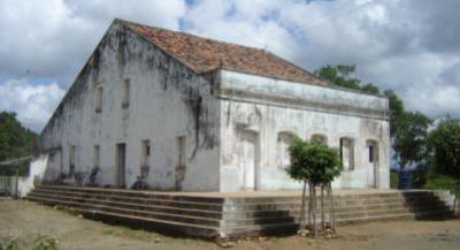
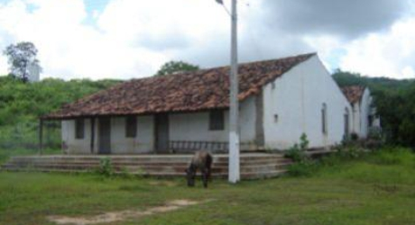

Informações técnicas sobre relevo, população, IDH etc.
| INFORMAÇÕES | |
|---|---|
| Municípios limítrofes | Norte: Saboeiro, Jucás e Cariús. Leste: Cariús e Farias Brito. Sul: Assaré. Oeste: Antonina do Norte |
| Fundação | 21 de outubro de 1987. (33 anos) |
| Área total | 412,719 km² |
| Clima | Tropical quente semiárido |
| IDH | 0,576 |
| PIB | R$ 6.788,95 |
| INFORMAÇÕES TERRITORIAIS | |
|---|---|
| Número de habitantes | 8 592 habitantes |
| Superfície de Tarrafas |
45 439 hectares
454,39 km² |
| Densidade populacional | 18,9 ha./km² |
| Altitude de Tarrafas | 281 metros de altitude |
| Coordenadas geográficas decimais |
Latitude:
-6.68525
Longitude: -39.7603 |
| Coordenadas geográficas sexagesimais | Latitude: 6° 41' 7'' Sul , Longitude: 39° 45' 37'' Oeste |
| INFORMAÇÕES DO MUNICÍPIO | |
|---|---|
| Endereço da Prefeitura Municipal de Tarrafas |
Tarrafas
Prefeitura de Tarrafas
Rua São José, nº 270 - Centro Tarrafas - CE, 63.145-000 Brasil |
| Telefone da prefeitura |
(88) 3549-1020
Internacional: +55 88 3549-1020 |
| Fax |
(88) 3549-1111
+55 88 3549-1111 |
| Endereço electrónicoda prefeitura |
contato@tarrafas.ce.gov.br - ouvidoria@tarrafas.ce.gov.br
|
| Site oficial do município | tarrafas.ce.gov.br |
| INFORMAÇÕES DO ADMINISTRATIVAS | ||
|---|---|---|
| Prefeito de Tarrafas | Tertuliano Candido Martins de Araujo | |
| Partido politico | PDT | |
| INFORMAÇÕES DE TRANSPORTE | |
|---|---|
| Transporte urbano disponível | - |
| Aeroporto |
Aeroporto Regional do Cariri
80.4 km
Aeroporto de Picos
199.5 km
Aeroporto de Petrolina
311.1 km
|
| INFORMAÇÕES DE DISTÂNCIA A OUTRAS CIDADES | ||
|---|---|---|
| São Paulo : 2016 km | Rio de Janeiro : 1843 km | Brasília : 1349 km |
| Salvador : 713 km | Curitiba : 2319 km | Belo Horizonte : 1530 km |
| Manaus : 2282 km | Fortaleza : 357 km mais perto | Recife : 560 km |
| Goiânia : 1519 km | Belém : 1132 km | Porto Alegre : 2862 km |
| Guarulhos : 1995 km | Campinas : 1968 km | São Luís : 684 km |
| Distância calculada em linha reta! | ||
Conheça mais sobre a história de Tarrafas.
A primeira emancipação de Tarrafas aconteceu no ano de 1.963. O então deputado estadual Erasmo Rodovalho de Alencar, que pertencia ao Partido Trabalhista Brasileiro - PTB, fez uma aliança com as lideranças da UDN local e conseguiu a emancipação. O feito foi de grande aceitação popular, festejado com unanimidade partidária.
No início de l.964, foram criados os diretórios da UDN e do PSD. A partir de então, as eleições municipais tomavam corpo. A UDN, coligada com o PTB, lançaram para concorrer à Prefeitura, o nome do agricultor Antônio Pereira, do sítio Barra do Urucu.
Enquanto o PSD lançava o nome de Antônio Saturnino do Prado, que já cumpria o quarto mandato de vereador.
No entanto, o sonho da emancipação foi frustrado pela ditadura que se implantou no País a partir de abril de 64. O ditador Humberto de Alencar Castelo Branco em seus famosos atos institucionais, derrubou todos os municípios emancipados.
A emancipação definitiva veio somente no dia 21 de outubro de 1.987. Em 15 de novembro de 1.988 foram eleitos o prefeito, o vice-prefeito e os nove vereadores. O município foi instalado no dia 1° de janeiro de 1.989.
Saiba mais sobre os melhores lugares e o que fazer em Tarrafas.
O casarão, construído no início do século XIX pelas primeiras famílias que chegaram para colonizar o vale do Riacho do Urucu, pertence aos descendentes de Antonio Vilanova, herói de Canudos, considerado braço forte de Antônio Conselheiro. O prédio conserva grande parte de sua estrutura antiga, inclusive o sotum de madeira de lei.
 Casarão de Antônio JilóCom mais de um século e meio edificado, abrigou várias gerações de nobres, começando pelo Padre Lima, que desbravou as baixas do Riacho dos Tapuias, plantando cana-de-açúcar com auxílio da mão-de-obra escrava. No local, foi construído o engenho de pau para fabricação do açúcar mascavo. No entanto, o casarão ficou famoso quando passou a pertencer ao fazendeiro Antonio Jiló. A edificação encontra-se no povoado de Cajazeiras do Jiló.

Veja como chegar nos melhores pontos de Tarrafas